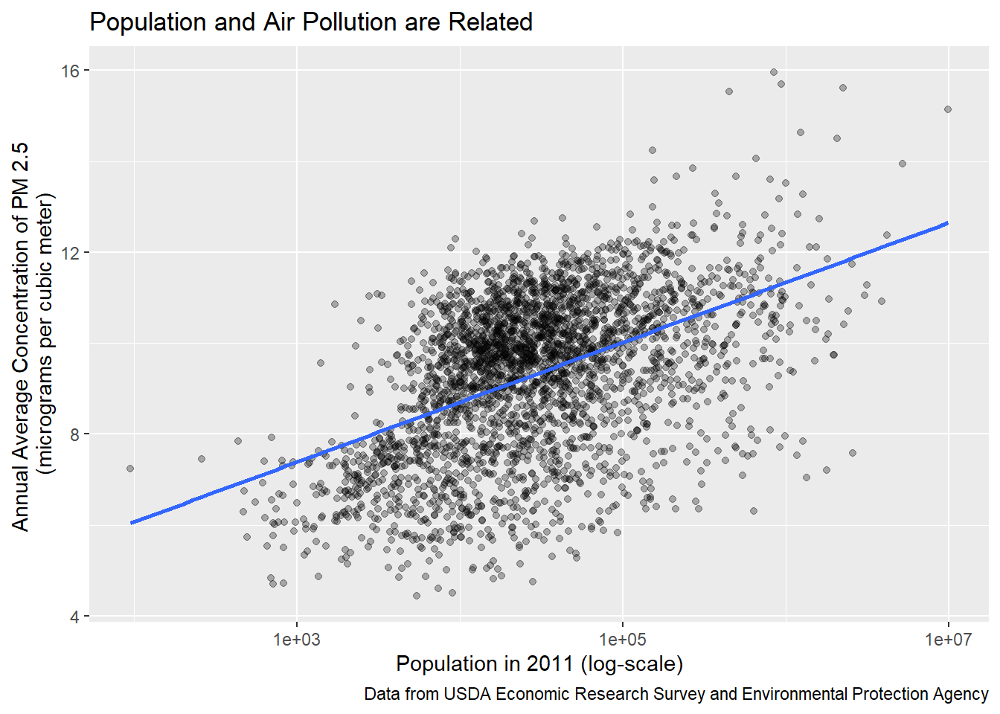
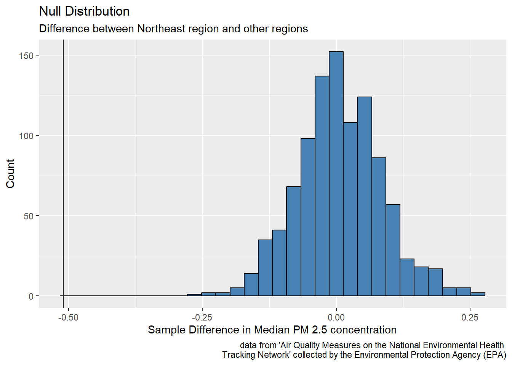

U.S. Air Quality by Region
Report
Introduction and Data
Our research is motivated by the desire to understand how air pollution differs between the various regions in the United States. We will be investigating the research question of how do air pollution levels differ between the regions of West, Southwest, Midwest, Southeast, and Northeast as defined by the National Geographic Society of the mainland United States from the years 2008-2011. Also, we will use data from “Air Quality Measures on the National Environmental Health Tracking Network“ in order to have information about air pollution across the United States. The air pollution data set is obtained from the Center for Disease Control (CDC). The data was originally collected by the Environmental Health Tracking Network through the Environmental Protection Agency (EPA). This data provides values about air pollution collected from Air Quality Systems (AQS) from 4,000 monitoring stations across the United States. It is also important to note that the data was collected in a completely ethical manner as regulated by CDC guidelines.
The air pollution data set provides information about the collection of air pollution values from across the United States which were identified by state, county name, and other digit identifiers as well. The key variables in this data set included “StateName” (the name of the state), “CountyName” (the name of the county), “Value” (air pollution value) and “Unit” (the units used to measure the air pollution value), and “ReportYear” (the year the air pollution value was collected). We also will examine how air pollution is related to population levels. The data regarding population levels came from the data set “United States counties” which contains information about population and industry. The data was originally collected by the United States Census and prepared by the USDA, Economic Research Service. The key variables included “state” (the name of the state), “name” (the name of the county), “pop2011” (population of the county in 2011), metro_2013 (whether the county was considered metropolitan or not in 2013) and firms_2007 (the number of firms present in 2007).
From the data set, “Air Quality Measures on the National Environmental Health Tracking Network”, we created the new variable of Region to have information about how each of the counties falls into one of the following regions in the United States: West, Southwest, Midwest, Southeast, and Northeast. Also, we removed values from before the year of 2008 because we wanted to focus on a more recent smaller subset of years from 2008 - 2011.
In order to achieve our goal related to our research question, we will be performing statistical analysis on the annual average ambient concentrations of PM 2.5 in micrograms per cubic meter, based on seasonal averages and daily measurement (monitor and modeled data) in the air pollution data set. PM 2.5 refers to particles in the air that are 2.5 microns (0.001 mm) or less in width. Because particles in the PM 2.5 size range can travel through the respiratory tract and reach the lungs, they can cause short and long term health problems. As such, PM 2.5 concentration is commonly used as a measurement for air quality and air pollution.
To answer our question, we will analyze data sets that include statistics such as the number of metropolitan areas per region and the number of firms per region and compare these to average PM 2.5 concentration on the county level. This county data provides over 100 statistics about counties across the US from the year 2000 onwards. We hypothesize that the counties with a greater population will have more air pollution. Due to this, we also hypothesize that the Northeast will have the most air pollution as it has the most metropolitan counties.
Literature Review
The article “Air Pollution Index Systems in the United States and Canada” explored and analyzed data similar to the data that will be analyzed in this report. This study surveyed all available air pollution indices through literature review and conversations with air pollution control agencies in the US and found that 35 out of 55 metropolitan air pollution control agencies used some form of daily air pollution index. The study developed a system to classify the indices into 14 different types based on four criteria. It was found that no two indices were exactly the same. The survey results and agency comments were used to identify characteristics and criteria for a uniform air pollution index. This report will differ from this study because this report will not analyze different indexes but rather use data from Air Quality Monitoring Stations across the United States to explore how air pollution potentially differs across regions in the United States. This will provide meaningful data and better identify areas of concern, which may help future efforts on addressing air pollution in the United States.
Methodology
First, we explored which regions have the greatest proportion of metropolitan areas. We found that the Northeast leads all regions in this statistic, as about 60% of their counties were marked as metropolitan in 2013. The Southeast had the second greatest proportion at about 45%. The other three regions (Midwest, Southwest, and West) had about 30% of their counties marked as metropolitan areas.
Additionally, we found the median county population per region in 2011 and found that the Northeast had the greatest median population at about 100,000. All four other regions had a median population between 20,000 and 30,000.
Now, we can look at the air pollution data.
The air_quality data set contains several statistics on fine particle concentrations and ozone concentrations on the county level in the United States from 2001 to 2011. Our analysis will focus on the annual average ambient concentrations of PM 2.5 based on seasonal averages and daily measurement, and we will be looking at the data from 2008 to 2011. We chose these years because we wanted to get an idea of the most recent air quality measures from the data.
The distribution of average county PM 2.5 concentration in the United States from 2008-2011 can be seen with a histogram.
The distribution of annual average PM 2.5 concentrations is right skewed, so there are a few counties with large outliers. In general, concentrations range between about 4 and 22 micrograms per cubic meter. The peak occurs at 10 micrograms per cubic meter.
For our analysis, we will be using the median annual average PM 2.5 concentration as our summary statistic rather than the mean. Because the distribution is skewed, the median would be more representative of the center of the data than the mean.
# A tibble: 1 × 1
med_concentration
<dbl>
1 9.78The median annual average PM 2.5 concentration is 9.78 micrograms per cubic meter. This is the typical value for a county in the United States from 2008-2011.
Next, we looked at how fine particle concentration was related to population.
`geom_smooth()` using formula = 'y ~ x'
There is a clear positive relationship between population and average concentration of PM 2.5 particles, indicating that counties with more people tend to have worse air pollution, on average. In addition, we looked at how PM 2.5 concentration differs between metropolitan areas and non-metropolitan areas.
It looks like metropolitan areas do tend to have a greater average annual concentration of PM 2.5 particles. As we found before, the Northeast has the greatest proportion of metropolitan counties and the greatest median county population. Because greater populations and metropolitan areas are associated with more air pollution, we expect the Northeast to have a greater median concentration than all other regions.
We compared the median annual concentration of fine particles for counties in each region to get an initial look of the regions suffering from poor air quality the most.
# A tibble: 5 × 2
Region med_concentration
<chr> <dbl>
1 Southeast 10.6
2 Midwest 9.80
3 Northeast 9.31
4 Southwest 8.32
5 West 6.97The Southeast region has the greatest median concentration of PM 2.5 particles (10.6 micrograms per cubic meter), while the West region has the lowest (6.97 micrograms per cubic meter).
Looking at the distributions of average PM 2.5 concentration by region, it is evident that there are many counties in the West region with high average PM 2.5 concentrations. In fact, several of the counties with the greatest average PM 2.5 concentrations were from the West region.
We hypothesized that the Northeast would have the worst air quality among the five region outlined since it has the greatest proportion of metropolitan areas and the highest median population. To get a better idea of the true median average PM 2.5 concentration in Northeast counties, we calculated a confidence interval.
# A tibble: 1 × 2
lower upper
<dbl> <dbl>
1 9.17 9.45Based on the results above, we are 95% confident that the true median average PM 2.5 concentration in Northeast counties from 2008-2011 is between 9.17 and 9.45 micrograms per cubic meter.
We decided to conduct a hypothesis test because it could provide an answer to whether there would be a difference between the air quality of the Northeast compared to other regions. Our hypothesis is that the Northeast region would have the worst air quality. To test this, we ran a hypothesis test to compare to difference in median PM 2.5 concentration per county among Northeast counties and all other counties. Our null hypothesis is that the true median PM 2.5 concentration for Northeast counties from 2008-2011 is the same as the true median PM 2.5 concentration for all other counties. Our alternative hypothesis is that the true median PM 2.5 concentration for Northeast counties from 2008-2011 is greater than the true median PM 2.5 concentration for all other counties. We set our significance level \(\alpha\) at 0.05. Simulation-based techniques were used because they are generally less restrictive than theory-based techniques.
\(H_o: \mu_{ne} - \mu_{other}\) = 0
\(H_a: \mu_{ne} - \mu_{other}\) > 0
\(\mu_{ne}\): true median PM 2.5 concentration for Northeast counties from 2008-2011
\(\mu_{other}\): true median PM 2.5 concentration for all other (non-Northeast) counties from 2008-2011
# A tibble: 2 × 2
is_northeast median_concen
<chr> <dbl>
1 Northeast 9.31
2 Other 9.82`stat_bin()` using `bins = 30`. Pick better value with `binwidth`.
# A tibble: 1 × 1
p_value
<dbl>
1 1Even though the point estimate is far away from the null distribution, we hypothesized the Northeast counties would have a higher median concentration of PM 2.5 particles, so the point estimate is far off in the wrong direction! Therefore, we got a p-value greater than 0.999, meaning we fail to reject our null hypothesis that the true median PM 2.5 concentration for Northeast counties from 2008-2011 is the same as the true median PM 2.5 concentration for all other counties. There is weak evidence to conclude the alternative hypothesis that the true median PM 2.5 concentration for Northeast counties from 2008-2011 is greater than the true median PM 2.5 concentration for all other counties. The incredibly high p-value signifies a surprising trend: the Northeast counties actually have a lower median PM 2.5 concentration than other U.S. counties from 2008-2011, which is unexpected since the Northeast tends to have more firms and a high proportion metropolitan areas.
Results
We used the data analysis and visualization techniques to make meaning of the median annual average concentration of fine particle concentration. We found that annual average concentration of fine particle concentration is related to population size and whether a county is a metropolitan area. In addition, we found that the Northeast had the highest proportion of metropolitan counties and the greatest median population size.
Our data analysis allowed us to find that overall the median annual average PM 2.5 concentration was 9.78 micrograms per cubic meter for all U.S. counties from 2008-2011. Then, the median annual average PM 2.5 concentration was calculated for each region. Southeast had the largest median annual average PM 2.5 concentration with a value of 10.6 micrograms per cubic meter followed by the Midwest with 9.6 micrograms per cubic meter, then Northeast with 9.3 micrograms per cubic meter, Southwest with 8.3 micrograms per cubic meter, and West with 7.0 micrograms per cubic meter. It is important to note that several of the regions have outliers especially the West region.
Then, we analyzed how population levels play a role in the presence of pollution in regions. One visualization demonstrated how there is a direct relationship between population and air pollution while a violin visualization showed how metro areas have more air pollution. We then hypothesized that the Northeast has the highest air pollution and thus the worst air quality since it has the greatest proportion of metropolitan counties and the greatest median county population. Thus we estimated the true median average PM 2.5 concentration with a confidence interval using bootstrap methods. We used a confidence interval because initially we wanted to estimate the true median average PM 2.5 concentration, and confidence intervals are helpful for estimations. A bootstrap distribution was utilized because the Central Limit Theorem does not apply for medians.
Then a hypothesis test was conducted to compare the difference in median PM 2.5 concentration per county among Northeast counties and all other counties. A hypothesis test was chosen because there were two options presented; therefore, a hypothesis test could provide evidence for which option was most true given the data. The alternative hypothesis was that the true median PM 2.5 concentration for Northeast counties from 2008-2011 is greater than the true median PM 2.5 concentration for all other counties; however, we failed to reject the null hypothesis that the true median PM 2.5 concentration for Northeast counties from 2008-2011 is the same as the true median PM 2.5 concentration for all other counties.
Discussion
Based on the visualizations and summary statistics, we came to the conclusion that the Northeast has a lower true median annual PM 2.5 concentration than other regions in the United States. We were surprised to find that the Northeast region, the region with the most highest proportion of metropolitan areas and the greatest population, actually had a lower median PM 2.5 concentration than all other counties. Although we expected the Northeast to have the worst air quality, it turns out it has a lower typical fine particle concentration than other regions.
The primary limitation of this data analysis is the short time span and older date of the data (only between 2008-2011). As a result, the air pollution data may no longer be accurate for each region in 2023, as drastic changes may have occurred in the past ten years. It is thus difficult to determine trends in air pollution and concretely determine causes without having a longer period of time to study and analyze. The analysis could thus be significantly improved if more recent data were available, allowing us to look at data over a longer period of time from 2008-2023.
Another potential limitation of the results of this analysis is the aggregation of data into large regions, when levels of air pollution across the region likely vary significantly. Therefore, future research could be conducted for more specific and reasonable ways of dividing the country for analysis than broad regions. Additionally, there exist many more ways of measuring air pollution than just PM 2.5, so future work could also incorporate other indicators of air quality and air pollution beyond just PM 2.5.
Bibliography
Centers for Disease Control and Prevention. (2018, June 5). Air quality measures on the National Environmental Health Tracking Network. https://data.cdc.gov/Environmental-Health-Toxicology/Air-Quality-Measures-on-the-National-Environmental/cjae-szjv
Journal of the Air Pollution Control Association. (2012, March 13). Air Pollution Index Systems in the United States and Canada. https://doi.org/10.1080/00022470.1976.10470272
New York State Department of Health. (2018, February). Fine particles (PM 2.5) questions and answers. https://www.health.ny.gov/environmental/indoors/air/pmq_a.htm#:~:text=The%20term%20fine%20particles%2C%20or,microns%20or%20less%20in%20width.
OpenIntro. (n.d.). United States counties. https://www.openintro.org/data/?data=county_complete
United States regions. (n.d.). National Geographic. Retrieved April 4, 2023, from https://education.nationalgeographic.org/resource/united-states-regions/